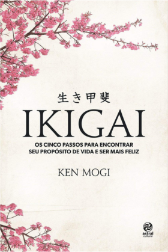

Projeto 2
Sobre mim
Eu moro em uma cidade no interior de um estado no país Brasil.
Meus pais moram na zona rural (roça) e eu vou para lá nos finais de semana.
No meu tempo livre gosto de tocar violão. Algumas das músicas que gosto de tocar são:
- Nada sei – Kid Abelha
- Tempo Perdido - Legião Urbana
- Chão de Giz - Zé Ramalho
- I'm with you - Avril Lavigne
- Angels - Robbie Williams
Segue o vídeo de uma das músicas mencionadas:
Também gosto de ler, apesar de não ter muito tempo para isso. Gosto de livros que ensinam sobre a vida, gestão do tempo, ter bons hábitos, entre outros assuntos.
Atualmente estou lendo o livro Ikigai – propósito de vida. Segue uma imagem da capa dele:
